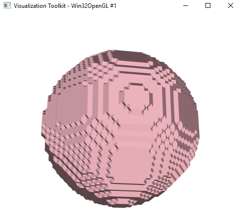

Cancer Research Software
Client: Rohan Amare, Kansas State University
This Python based program was the brain child of Kansas State Professor Amir A Bahadori and his assitant Rohan Amare. The program is designed to render input data from MRI scans in both 2 Dimensional and 3 Dimensional space. The goal of the project is to map the flow of blood and heat transfers throughtout the body in order to detect potentially cancerous anomelies. The researchers contact myself and a couple of my colleagues to consult and aid in their development. The software itself was slow, riddled with bugs, and borderline ineffective in completing it's tasks. My portion of the project consisted of implementing bug fixes, reducing time consuming operations, and retrofitting the existing code base for use on the university supercomputer.